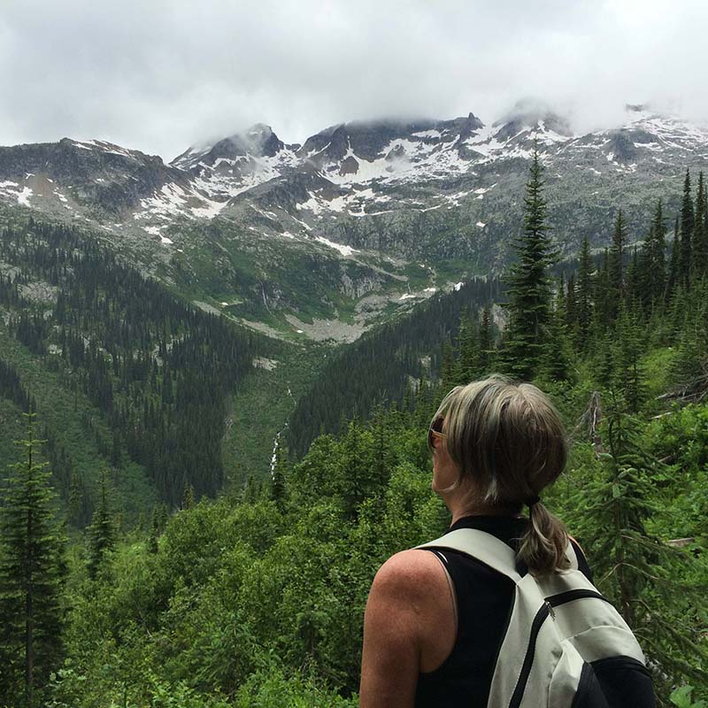
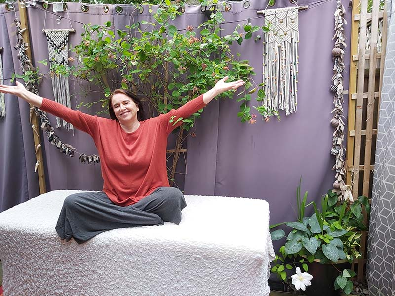

As I am trained in Energy Medicine and End of Life Doula Care, I am able to provide sessions for those of us still
actively engaged in life as well as support and comfort for those who are dying. I do this in a variety of ways.
I provide easy to learn energy medicine techniques and sessions for the former and I provide support, information
and care and comfort for the latter.
I am hands on in both areas. With energy medicine treatments I work out of my home or remotely via Zoom to provide
protocols for releasing energy, moving energy, bringing energy in or redistributing energy. With my doula work I
will sit with a patient and their family members, and just be there for them in whatever way they need. If
silence is needed, I will give the space for that. If reconciliation is needed I will attempt to open up conversation
for that. If information or planning is requested I provide for that.

As well I offer my energy medicine skills to those who are dying, are in pain, in fear, uncomfortable, scared, angry etc.
I have techniques to lessen swelling that causes pain as well as calming techniques to take some of the fear away.
For those who are dying I can come to them, with my table or without. I can work with them at whatever level
they like, touch or touching within their energy field.
I begin each session by testing your energies using various techniques, assessing where it is stuck,
irregular, weak or over energized. Like a highway worker who opens another lane on a traffic jammed highway,
boosts a dead car battery, or designs a traffic calming system, I help
your body's energy move along it's intended path. Once a general energy evaluation is done, the session may
take any number of directions using various protocols.
An energy session isn't like a massage in that we are working with goals beyond relaxation and enjoyment.
That being said, you will receive a lot of very soothing, relaxing and enjoyable treatments!

One thing you can say with certainty is that each energy medicine session will never follow an assumed path.
Instead your energy system will lead me to where I need to go. As an energy detective, I may have an idea of
what I will work on when you
walk in the door. But as soon as you are on the table, your energy runs the show.
At the end of the session (click here for more
session information.)
I may give you some handouts, a bit of homework
or some advice about how to balance your energies on your own. You can come back as often as you like and it is
great if you also take notes on your progress.
END OF LIFE DOULA SUPPORT
A person will request my help for many reasons. They may need help with figuring out how to do an end of life
care plan. They may want help with talking to a reluctant family member, be it the dying person or another
member. There may be rifts in the family and this is preventing open communication.
They may have heard about EDITH, Expected Death in the Home and want to learn more about it. Or the No CPR form,
the DNR form, the advance directives for requesting or refusing life extending treatments. They may have heard about
MAID, Medical Assistance in Dying and need to know if they qualify. They may worry about their financial situation
or they may worry that the wrong family member will take charge of their health should they lose the ability to
speak for themselves.

A dying person may want to know more about new choices in funeral and burial techniques. They may want to put on
a Celebration of Life while they are still here. Or they may need help telling family members things they may be afraid to
say. The family may be afraid to witness the death of a loved one. I will hopefully, calm their worries with facts and
past experiences I have gained. Most will not die in pain and if given time and the ability to speak openly with their family
most will not die in fear. To get people to a place of acceptance is my most fervent hope.